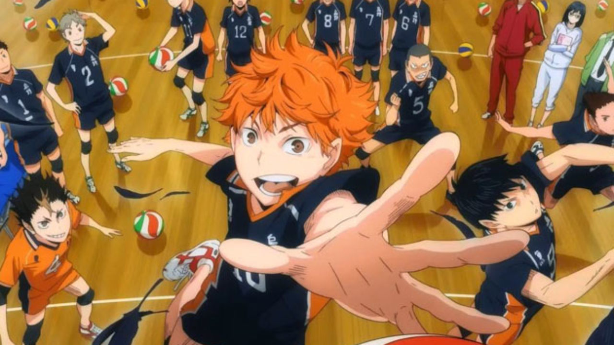

About Hinata
Hinata is awesome! He was motivated to play volleyball after seeing the Little Giant play, since they were both short. He practiced and became a really good player, along with Kageyama.
Hinata and his friends
Hinata's carachteristics
- He's short
- He's undrerrated and manages to surprise everyone
- He's trying to prove that he can play volleyball
Hinata's teammates
Hinata has some awesome friends and teammates. Kageyama started as his rival, but they eventual became a great duo and really good friends. Click on the links bellow to know more about Hinata's teammates: